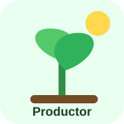
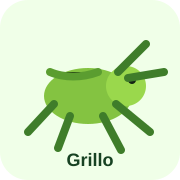
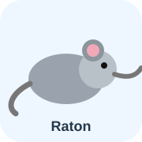
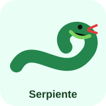
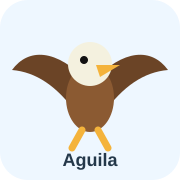
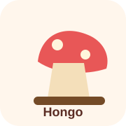
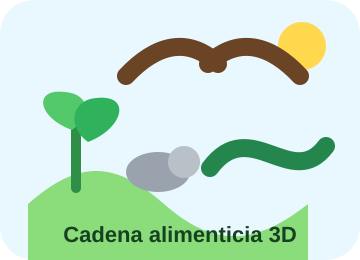

Productor
La planta fabrica su alimento con luz solar.
 Puntaje: 0
Puntaje: 0
Aprende cómo la energía pasa de un ser vivo a otro dentro de un ecosistema.

La planta fabrica su alimento con luz solar.

El grillo obtiene energía al comer plantas.

El ratón come insectos como el grillo y pasa la energía adelante.

La serpiente caza al ratón y mantiene el equilibrio del ecosistema.

El águila está en la cima de la cadena y caza serpientes.

El hongo devuelve nutrientes al suelo.
